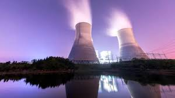
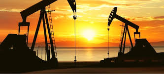
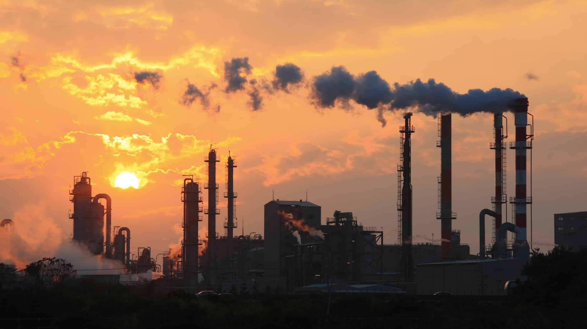
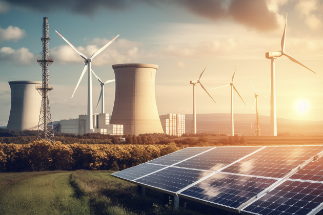

<!DOCTYPE htlm>
<htlm>
<htlm lang="en">
    <head>
        <link rel="stylesheet" href="https://cdnjs.cloudflare.com/ajax/libs/bootstrap/5.3.3/css/bootstrap.min.css">
        <script src="https://cdnjs.cloudflare.com/ajax/libs/bootstrap/5.3.3/js/bootstrap.bundle.min.js"></script>
        <title>Página vinculada.Raquel Domínguez</title>
        <link rel="icon" href="C:\Users\raque\Desktop\HTML2024\Trabajo1" type="energia-renovable">
        <link rel="stylesheet" href="https://cdnjs.cloudflare.com/ajax/libs/bootstrap/5.3.3/css/bootstrap.min.css">
        <script src="https://cdnjs.cloudflare.com/ajax/libs/bootstrap/5.3.3/js/bootstrap.bundle.min.js"></script>
        <meta charset="UTF-8">
        <meta name="viewport" content="width=device-width, initial-scale=1.0">
        <link rel="stylesheet" type="text/css" href="css/cssvinculada.css">
       
    </head>
<body>
   <header>
     <!-- Barra de Navegación -->
     <nav class="navbar navbar-expand-lg navbar-light bg-light">
      <div class="container-fluid">
        <a class="navbar-brand" href="#"></a>
        <button class="navbar-toggler" type="button" data-bs-toggle="collapse" data-bs-target="#navbarNav" aria-controls="navbarNav" aria-expanded="false" aria-label="Toggle navigation">
          <span class="navbar-toggler-icon"></span>
        </button>
        <div class="collapse navbar-collapse" id="navbarNav">
          <ul class="navbar-nav">
            <li class="nav-item">
              <a class="nav-link active" aria-current="page" href="inicio.html">Inicio</a>
            </li>
            
            <li class="nav-item">
              <a class="nav-link" href="trabajo1.html">Clasificación</a>
            </li>
          </ul>
        </div>
      </div>
    </nav>
             
    <h1><p class="inicio">ENERGÍAS NO RENOVABLES</p></h1>
       
   <div class="contenedor">
       <nav>
        <ul>
            <li><a href="#DEFINICION">DEFINICIÓN</a></li>
            <li><a href="#TIPOS">TIPOS</a></li>
            <li><a href="#Carbon">Carbón</a></li>
            <li><a href="#Petroleo">Petróleo</a></li>
            <li><a href="#Gas Natural">Gas naturaleza</a></li>
            <li><a href="#Energia Nuclear">Energía Nuclear</a></li>
        </ul>
    </nav>
    <!--carousel-->
    <div id="carouselExampleIndicators" class="carousel slide" data-bs-ride="carousel">
      <div class="carousel-indicators">
        <button type="button" data-bs-target="#carouselExampleIndicators" data-bs-slide-to="0" class="active" aria-current="true" aria-label="Slide 1"></button>
        <button type="button" data-bs-target="#carouselExampleIndicators" data-bs-slide-to="1" aria-label="Slide 2"></button>
        <button type="button" data-bs-target="#carouselExampleIndicators" data-bs-slide-to="2" aria-label="Slide 3"></button>
        <button type="button" data-bs-target="#carouselExampleIndicators" data-bs-slide-to="3" aria-label="Slide 4"></button>
        <button type="button" data-bs-target="#carouselExampleIndicators" data-bs-slide-to="4" aria-label="Slide 0"></button>
      </div>
      <div class="carousel-inner">
        <div class="carousel-item active">
          
        </div>
        <div class="carousel-item">
          
        </div>
        <div class="carousel-item">
          
        </div>
        <div class="carousel-item">
          
        </div>
      </div>
      <button class="carousel-control-prev" type="button" data-bs-target="#carouselExampleIndicators" data-bs-slide="prev">
        <span class="carousel-control-prev-icon" aria-hidden="true"></span>
        <span class="visually-hidden">Previous</span>
      </button>
      <button class="carousel-control-next" type="button" data-bs-target="#carouselExampleIndicators" data-bs-slide="next">
        <span class="carousel-control-next-icon" aria-hidden="true"></span>
        <span class="visually-hidden">Next</span>
      </button>
    </div>
        
    <hr>
    </header>
    
 <div class="container">
   <ol>
    
    <section id="DEFINICION">
           <li><h2>DEFINICIÓN</h2></li>
        <p>Las fuentes de energía no renovables destacan por tener unas reservas limitadas que disminuyen con el consumo. Su extracción es cada vez más difícil, lo que hace que aumente su coste.</p>
        </section> 
       <section id="TIPOS">
         <li> <h2>TIPOS:</h2></li>
        </section> 
    </ol>
          <ul>
            <section id="Carbon">  
         <li><h3>Carbón</h3></li></li>
         <p> El carbón es un combustible fósil. Se denominan así a aquellos materiales orgánicos combustibles que se encuentran en la corteza terrestre y se han formado hace mucho tiempo, a partir de la descomposición de plantas en condiciones de presión elevada durante millones de años.</p> 
         
         </section>
         <section id="Petroleo">
         <li> <h3>Petróleo</h3></li>
         <p>El petróleo se origina a partir de una materia prima formada fundamentalmente por restos de organismos vivos acuáticos, vegetales y animales que vivían en los mares, las lagunas, las desembocaduras de los ríos y en las cercanías del mar.<br>Por otra parte, la extracción y los procesos para el tratamiento, transporte, almacenamiento y los usos del petróleo con fines energéticos tiene un gran impacto sobre el medio ambiente y se relacionan con la lluvia ácida, el calentamiento global o la contaminación como consecuencia de la gran cantidad de CO₂ que se emite a la atmósfera al quemar los combustibles fósiles.</p>
         
        </section>
        <section id="Gas Natural">
         <li> <h3>Gas Natural</h3></li>
        <p>El gas natural es un combustible fósil que se ha acumulado durante millones de años en la tierra, como resultado de una descomposición anaeróbica (sin oxígeno) de los restos de plantas y animales<br>Se extrae principalmente a través de pozos perforados en yacimientos subterráneos de rocas porosas.</p>
        
        </section>
        <section id="Energia Nuclear">
        <li> <h3>Energía Nuclear</h3></li>
        <p>La energía nuclear se puede obtener de dos formas: <a title"fusión nuclear" href="https://www.csn.es/fusion-nuclear">fusión nuclear</a> y <a title"fisión nuclear" href="https://www.csn.es/fision-nuclear">fisión nuclear</a>. En la fusión nuclear, la energía se libera cuando los núcleos de los átomos se combinan o se fusionan entre sí para formar un núcleo más grande.</p>
            
    </section>
    </ul>
    </section>
   

</div>
        <footer>
        <p>&copy; 2024 Mi Página vinculada. Raquel Domínguez Lucas.</p>
        </footer>
</body>
</htlm>
